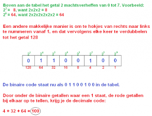

Binairstelsel
Het binair stelsel bestaat alleen uit 0 en 1. En toch kan je er alle cijfers mee maken. Je kan het vergelijken met de getallen 0 tot en met 9. Daar kun je ook alle cijfers mee maken. Een 0 of een 1 noem je een Bit. Door bits achter elkaar te zetten kun je getallen maken. Je kan maximaal 8 bits achter elkaar zetten. Hieronder zie je hoe je de getallen 1 tot en met 10 kan maken.
